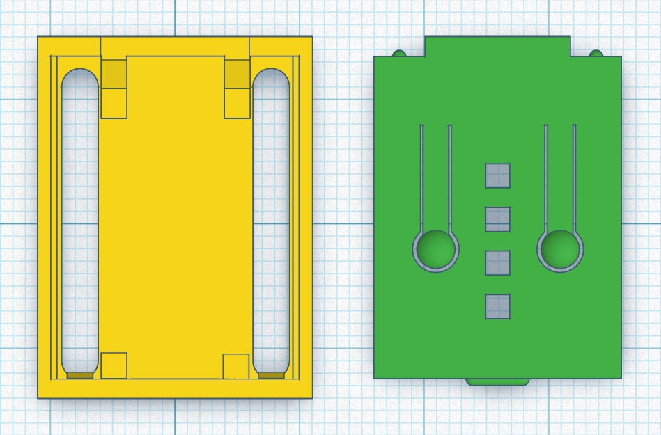
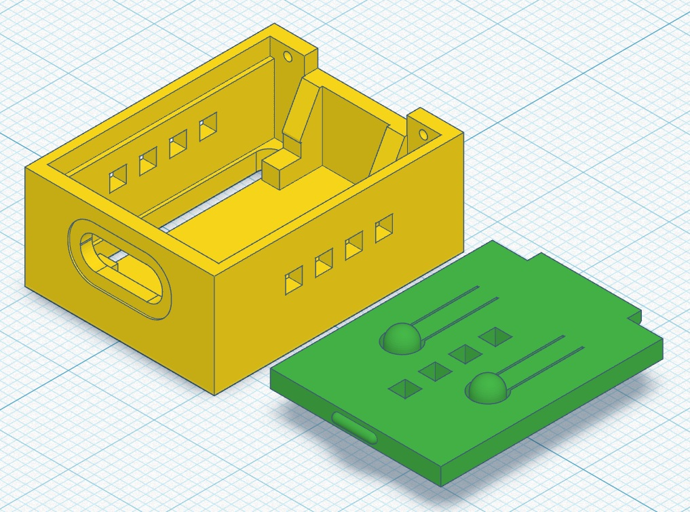
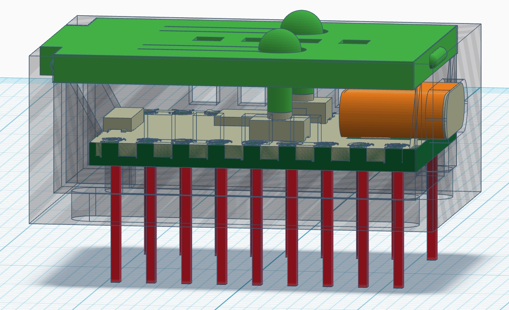
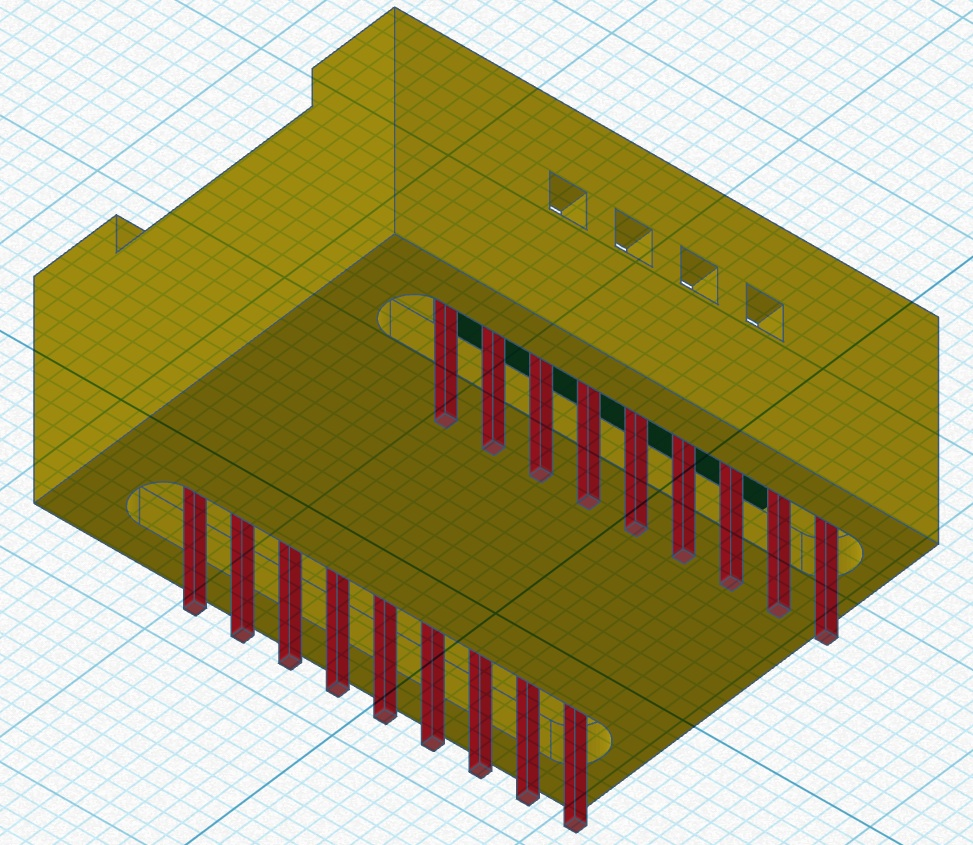
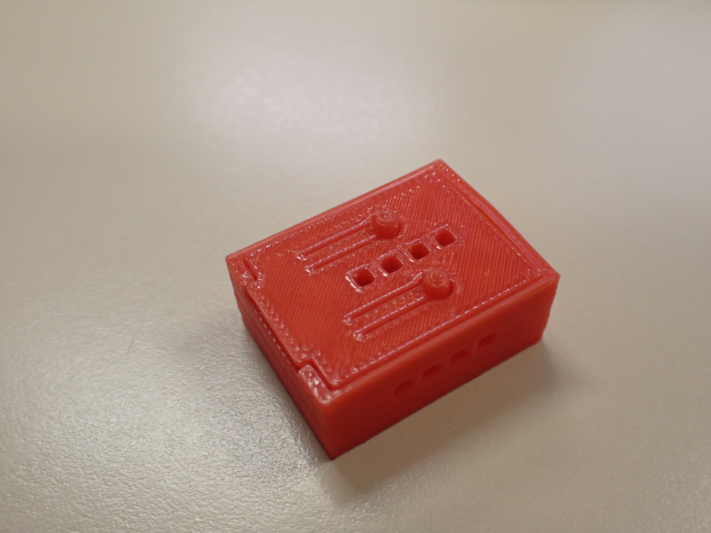
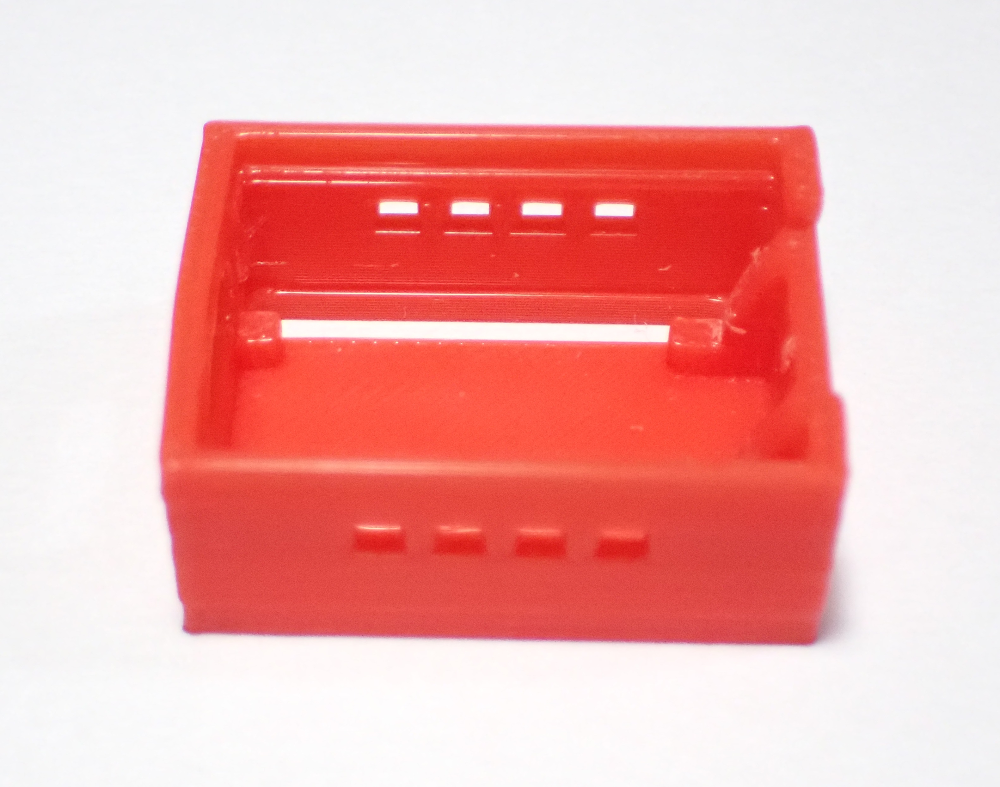
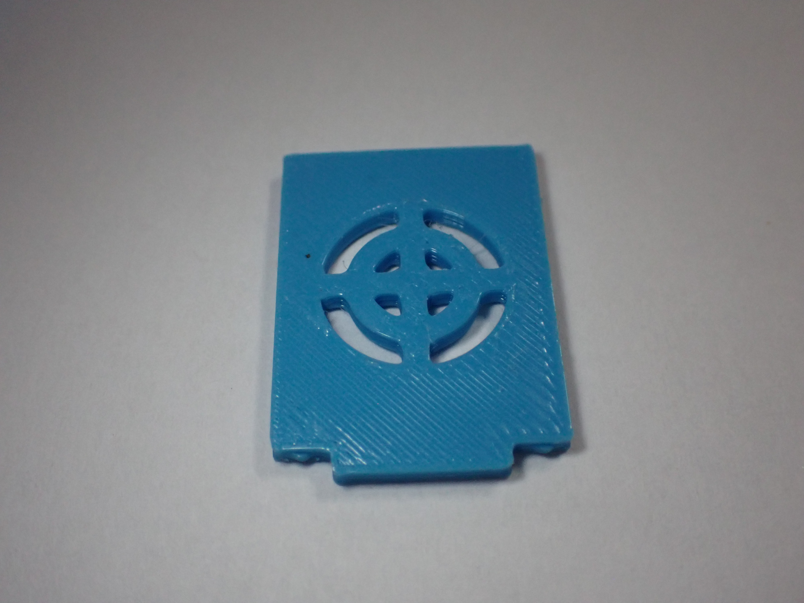
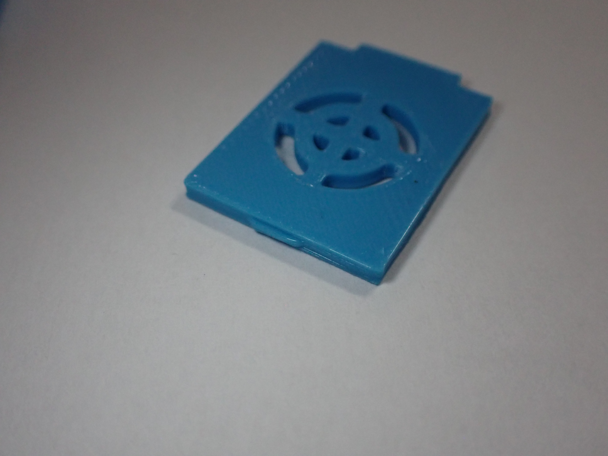

Prototype 1
First iteration of the 3D-printed case for the ESP32C3 Zero: project objectives, design choices, and results from the first test.
Description
The main objective of the first prototype was to verify the dimensions and footprint of the case around the ESP32C3 Zero board. The model was designed in Tinkercad and printed in PLA using a BambuLab A1 printer.
The case consists of two parts: a base that holds the board and a lid. Cutouts were included for the USB-C port, two side slots for the GPIO pins, and two holes for the BOOT and RST buttons.
Advantages (Pros)
- Successfully printed first version: working base structure.
- USB-C opening included and well sized.
- GPIO pin slots present on both sides.
- Ventilation on both sides and on the lid.
- Compact design suitable for classroom use.
Photos








Issues Encountered
- The case was long enough, but the board supports inside were too narrow, making it impossible to insert the board into the slot inside the case.
- The board pins protrude from the bottom of the case, risking damage if accidentally dropped.
- The lid fit was too small, and the side wall of the case deformed slightly when inserted.
- The two pins for the two flexible buttons on the lid were too long, and the buttons on the card remained squashed.
Conclusions
The first prototype identified the main problems with the case. In the second prototype, the box will be redesigned, correcting the geometric tolerances to address the defects found. The following steps will be taken:
— Widen the internal supports to facilitate board insertion.
— Increase the bottom thickness to protect the protruding pins from impacts.
— Reduce the lid recess to prevent deformation of the walls.
— Shorten the flexible button pins to restore the correct play on the buttons.